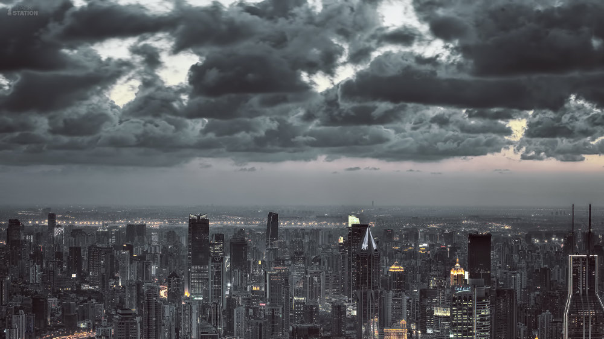
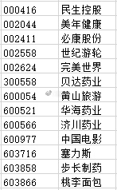
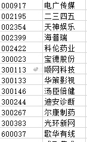
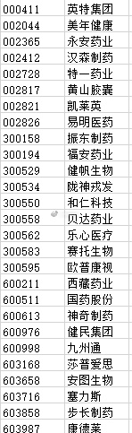
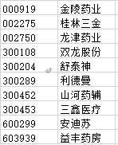

回复@LSWIYY:归属消费电子、休闲用品、酒店旅游、教育、文化传媒、药品零售、乳品、家庭用品、医药卫生、人寿保险、互联网软件等行业的股票纳入养老产业。//@LSWIYY:我好像看到了一些意想不到的公司…好奇原来这些公司划分到养老指数的依据是什么……@ETF拯救世界:发布了头条文章：《今天各大成分股调整样本股，对我们影响较大的有》 今天各大成分股调整样本股，对我们影响较大的有 今天各大成分股调整样本股，对我们影响较大的有 调入养老的有：  调出的是：  调入全指医药的是  调出的是：  红利指数本次不调整，12月调。
发布了头条文章：《今天各大成分股调整样本股，对我们影响较大的有》 今天各大成分股调整样本股，对我们影响较大的有 今天各大成分股调整样本股，对我们影响较大的有 调入养老的有： 调出的是： 调入全指医药的是 调出的是： 红利指数本次不调整，12月调。